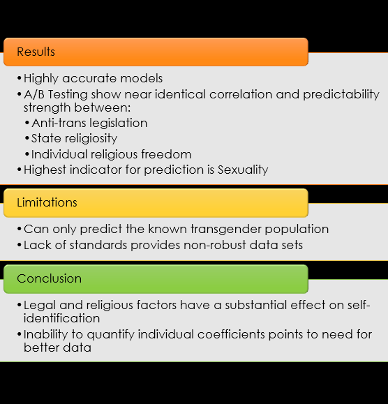
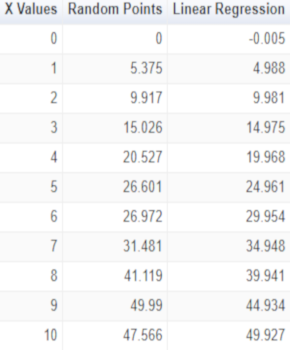
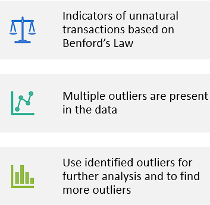
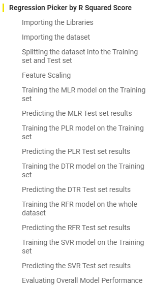

Click any of these buttons to filter projects based on type. Click any of the project pictures for access to code, write-ups, and more.
This contains a summary of my Masters Thesis on the percentage of people who identify as other than cisgender in the United States using a large dataset from the Census Bureau along with analysis across other incorporated data. Covariance was checked to isolate variables, and Bernoulli Naive Bayes and Support Vector Machine classifiers were used for predictors against the datasets. The models were also used to predict whether an individual would identify as other than cisgender given basic information, and was shown to have over 80% accuracy.

Analysis of Gender Identity Freedom
Machine Learning Full ReportThis project uses BNB and SVM classifiers against large datasets.
Python Presentation Full Thesis
This project uses client side rendering to create a simple linear regression model based on user input. It generates a series of semi-random numbers based on a proposed slope, and then calculates a linear regression from those points. This code is written entirely from scratch, without the use of any libraries or models, other than a graphing utility from Google for charts.

Client Side Linear Regression
Machine LearningThis project uses the client to create a simple linear regression.
New Tab
Discerning fake reviews is a difficult task. In this project, a Kaggle dataset was used with both known fake and real yelp reviews to create an algorithm to find fake reviews. It uses Natural Language Processing and contains a full report writeup.
Yelp Review Analysis
Machine Learning Language Processing Full Report Fraud Analysis TensorFlowThis project uses a kaggle dataset to discern fake and real restaurant reviews from Yelp.
Python Presentation Full Writeup
Across multiple variable sets, collected from samples in Kaggle, this project looks at the most and least likely aspects of a person's resume and personal information to determine their salary in STEM over time.
STEM Salary Analysis
Machine Learning Full ReportThis project uses a kaggle dataset to run salary analysis against STEM Fields based on multiple variables.
Python Presentation Full Writeup
Fraud Analysis is one of the most important tools that can be employed with Data Science. This project uses a sample dataset to run fraud and money laundering analysis using Excel and IBM i2 software tools. It contains analysis via Excel and a presentation to report findings, and explanations of how these tools can be improved over time to catch new methods of fraud in banking systems.

Fraud Analysis
Fraud Analysis Full ReportThis project uses a provided dataset to run fraud and money laundering analysis using Excel and IBM i2 software tools.
Python Excel (dataset) Presentation
Sometimes finding the best analytical algorithm is best done via a small dataset against multiple algorithms via best fit tools. This project picks the algorithm that best fits a generic dataset, and can be easily adapted to almost any project.

Regression Picker Template
Machine LearningThis template is used to automatically pick the best regression model from a small sample set, eliminating the need to figure out which of the others to start with!
Google Colab